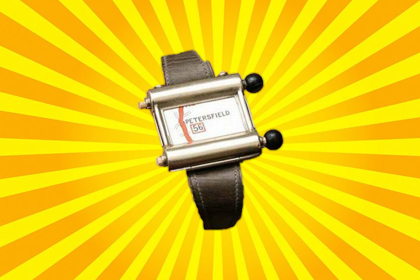

About Me

Hi, I'm Ryan Amalfitano, a current student at Brock University in St. Catharines, and I'm in my second year of the Interactive Arts and Sciences (IASC) program, which has strong links to the Digital Humanities (DH). The research specialization within DH that I find most interesting is text analysis and data visualization: a project within these fields that I would consider taking part in might be something like the Z-Axis Tool; some kind of text analysis and data visualization tool which can display and represent text analysis and research results in an interesting and coherent way. Some of my existing projects have already included results from text analyses and data visualizations, including my Academic Blog, in which I used the tool Voyant to find the most commonly used words in texts, which supported the argument I made within that project. In the future, I may take my work in other directions, such as perhaps combining text analysis and data visualization with geospatial analysis, to link specific words and terms to the corresponding geographical locations that they refer to or are linked to (again, like Z-Axis – where a story was taking place when a certain word was used), and include that within the visualization.
Academic Blog - Defining Digital Humanities

Abstract
In this blog post, I examine two articles written by prominent “DHers”: What Is Digital Humanities and What’s It Doing in English Departments? By Matthew Kirschenbaum in 2012, and Digital Humanities: The Expanded Field by Lauren Klein and Matthew Gold in 2016. These articles both argue their own views on the origin of Digital Humanities, with Kirschenbaum focusing on the history of DH and its origins withing English departments, and Klien/Gold leaning more towards DH's true origins and the meaning of the term Digital Humanities. Through these two articles, I created an academic blog post that addresses both of these views, and compares and contrasts the points behind each one, exposing their pros and cons, and coming to a conclusion about the nature of DH and the validity of both Kirschenbaum's, and Klein/Gold's viewpoints, as well as offering my own opinion on which of the two outlooks I agree with more, and why.
I feel that arguments such as those that Kirschenbaum and Klein/Gold present are of great significance to the field of Digital Humanities. Being such a new and immature discipline, it's easy for some works to blur the line between what is and what is not DH; such an occurrence should not simply be dismissed as a semantic issue, but rather addressed seriously as an opportunity to further define DH work. This kind of confusion is no doubt natural for a new discipline, and I believe that such strongly-rooted disciplines as English and History also had and continue to have such field-defining arguments, especially when they were considered new disciplines so long ago.
Research Timeline
My Academic Blog evolved in several ways from when I began researching it to when I finally posted it here. At first, I struggled to find an idea on what to write about and how to analyse it in a meaningful way. I decided to address Kirschenbaum's article, as the nature of DH itself as a topic definitely resonated with me. In looking for other articles to compare Kirschenbaum's opinion with, Klein/Gold's article seemed like the perfect choice, as it directly referenced Kirschenbaum's article and presented arguments that strove to explicitly dispute his views on the origins of DH and its prominent place within English departments. With these articles selected, I began to write out my own analysis and sought out DH-based tools to support this. The text analysis tool Voyant seemed to offer a great analysis of the language used in both articles, allowing me to compare their differing use of words and how they related to each of the authors' views on DH's origins and definition. With these articles and the text analysis results from Voyant, I went on to craft the first version of my blog post.
Upon submitting the post to my instructor, I received some valuable feedback on how to improve it even further. Although the post was well-written and showed a clear understanding of the articles it referenced, it was lacking in terms of my own presence and opinions. Thus, I added another short paragraph near the end of the post, presenting my opinion and outlook on the arguments that Kirschenbaum and Klein/Gold present. This is the final version of the academic blog, and the one you can read via the link below.
Academic Blog
Collaborative Project
Project Description
My Collaborative Project (with John Mattis, Jonathan Brenders, and Nicole Boccia) was a team presentation focused on the Scalar online publishing tool. Our presentation covered the basics of Scalar, its uses, as well as its history. Our team introduced the class to the Alliance for Networking Visual Culture (or ANVC), the team responsible for creating Scalar. We also went over some of the similarities and differences between Scalar and other publishing tools, and showed a Scalar test page to the site to show off some of its capabilities. We found that Scalar had numerous tools, some familiar and some unique, which allowed for a great degree of freedom in the creation of digital content.
Collaboration Statement
Personally, my approach to collaborative scholarship is one of professionalism and efficiency. I tend to prefer assigning the project's components to team members based on each member's individual skills and expertise, and working together to solve problems or remove obstacles that block the team's continued progress. For example, within the Collaborative Project, our team split up the work based on each member's skills. As a web developer and expert with the WordPress digital content publishing tool (a similar tool to Scalar), I took on the role of researcher, and set up the Scalar test page, as well as evaluated some of its capabilities, as my previous skills and experience allowed me to do so most efficiently out of all of our team's members.
In my opinion, collaboration can enrich any project and any team, regardless of their objective. Collaboration between scholars allows them to share ideas and opinions, come to new conclusions, and present those conclusions with their combined experience and skill sets. As explained above, my own personal approach to collaborative scholarship focuses on professionalism and efficiency. My workflow within teams typically goes something like this: go over the project's objectives, discuss the team's own interpretation of the project and establish a direction, and divide up the work between members based on their skills and experience. Collaborative scholarship can help a team reach their goals via the combined expertise of all team members involved, and it is a defining factor in the success of any team-based or collaborative project. You can view my team's collaborative project via the link below.
Collaborative Project


 Here are some images of the work I did on the project. Above is a screenshot of one of my slides as well as two screenshots of the test page.
Here are some images of the work I did on the project. Above is a screenshot of one of my slides as well as two screenshots of the test page.
Research Presentation
Below is the link to my Research Presentation, a solo project in which I gave a Pecha Kucha-style presentation to the class, introducing some early examples of GPS-like navigation technology, including the Plus Fours Routefinder and Iter Auto.
Research Presentation